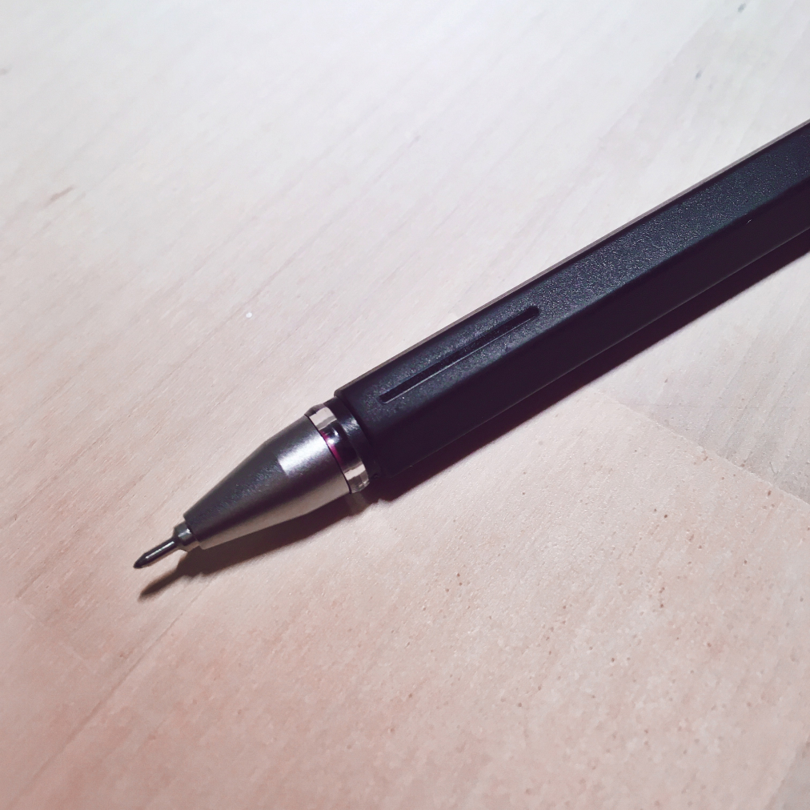

#product

There’s many products from Muji to admire, and this might be the smallest. The writing pen sweet-spot might lie between 0.20 millimetres which is a bit too hard and 0.30 millimetres which is too soft. This pen is 0.25 millimetre. It does not smear, and costs €9. At the end there is a miniature bump on two of its five sides, which gives a satisfying ‘click’ when you press the cap on.